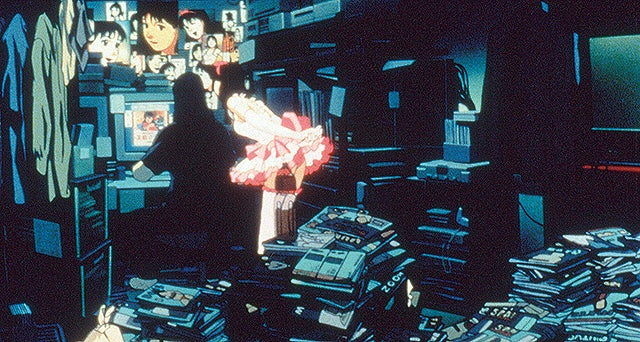
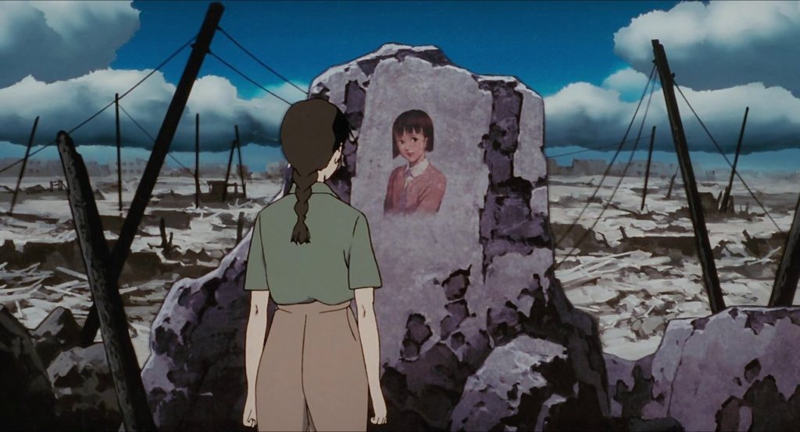
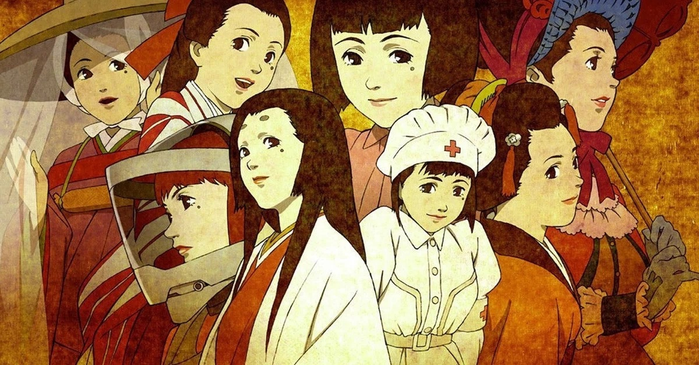
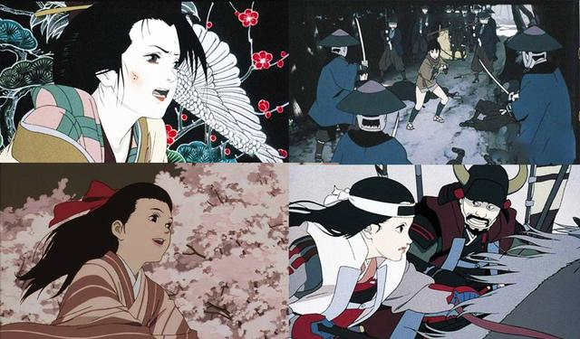
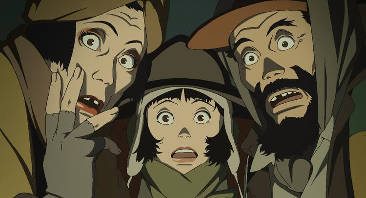
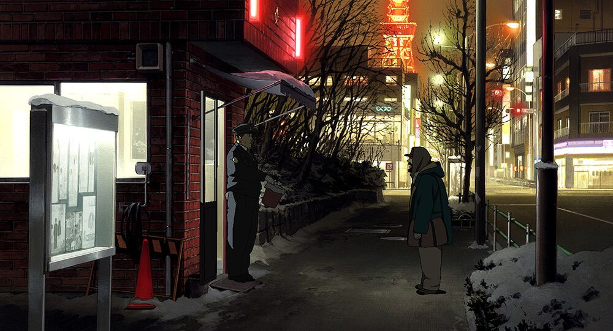
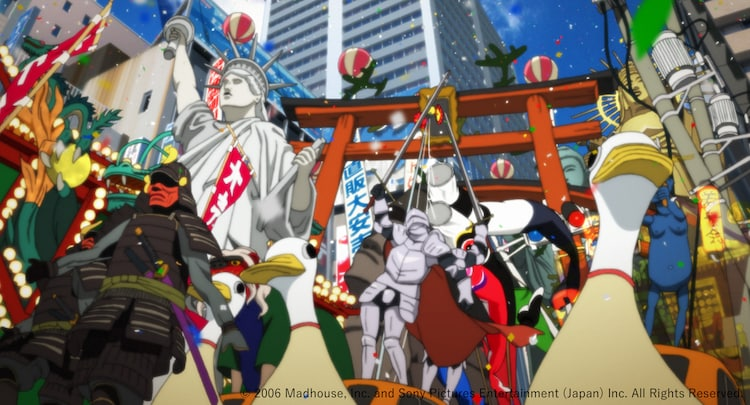
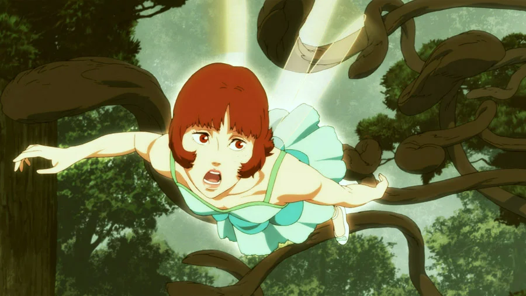
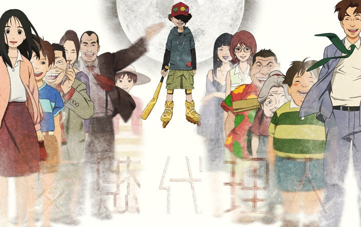

ギャラリー
今敏監督作品の美しい映像とアートワークをご覧ください









制作秘話
今敏監督の作品は、その革新的な映像表現と深いテーマ性で知られています。
現実と幻想の境界を曖昧にする独特の演出手法や、人間の心理を深く描いた物語は、
従来のアニメーションの枠を超えた芸術作品として高い評価を受けています。
このギャラリーでは、今敏監督の作品の美しい映像と、制作過程で生まれた貴重なアートワークをご紹介しています。